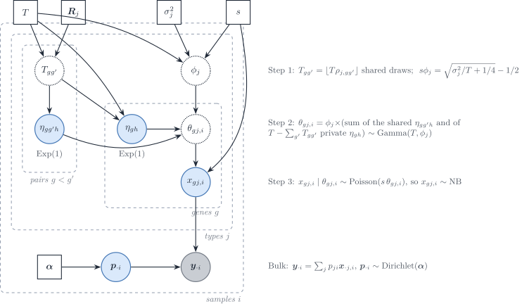

Appendix S5 — Model Mis-specification (Description Only)
Planned experiments — not yet implemented
10 Nov 2026
Source:vignettes/S5-misspecification.qmd
Overview
The DeCovarT model assumes that bulk expression arises from a Gaussian convolution: one latent profile per cell type, \boldsymbol{x}_{\cdot j}\sim\mathcal{N}_G(\boldsymbol{\mu}_{\cdot j},\boldsymbol{\Sigma}_j), weighted by p_j and summed, so that
\boldsymbol{y} \sim \mathcal{N}_G\Bigl(\sum_{j=1}^{J} p_j\boldsymbol{\mu}_{\cdot j},\; \sum_{j=1}^{J} p_j^{2}\boldsymbol{\Sigma}_j\Bigr).
Real bulk RNA-seq violates this assumption in at least seven ways:
- Observation noise model: counts follow a negative binomial (NB) or Poisson-log-normal (PLN) distribution rather than Gaussian.
- Heavy-tailed or contaminated bulk: outlier samples (technical artefacts, cell doublets) inflate tails.
- Missing reference component: an unmodelled cell type contributes to the bulk; all estimated proportions are redistributed.
- Inter-sample (copula) correlations: genes share latent batch structure, inducing correlation across observations.
- Wrong covariance reference: the within-cell-type covariance \boldsymbol{\Sigma}_j is estimated from a different cohort or technology, introducing systematic bias.
- Platform bias between bulk and reference: the bulk library and the single-cell library measure the same gene with different gene-wise factors (capture, gene length, transcriptome-size scaling), so \tilde{\boldsymbol{\mu}} estimated from cells is not the mean that enters the bulk (S5f, S5g).
- Normalisation of the inputs: a log or a per-cell rescaling of the counts breaks the linearity of the mixture, and the size of the signature panel decides how many inconsistent genes enter the fit (S5h, S5i).
How published methods stress-test deconvolution
Five second-generation methods report a robustness or sensitivity analysis: Bisque, DECALS, deMixSC, DWLS and ReDeconv. For each, this section states what is simulated, which factor is varied, and what the design cannot test for DeCovarT. Two further designs are reviewed as generators rather than as stress tests: the multivariate negative-binomial simulator of CSNet (Section 2.6) and the structured bulk noise of the HADACA3 challenge (Section 2.7). Each model is described in 5.1, review; here only the simulation design matters. Page numbers refer to the PDF of each article. Statements marked “(our remark)” are not in the source.
Bisque: a gene-wise affine platform map
Bisque (Jew et al. 2020) builds the base bulk of each of six individuals as the sum of all snRNA-seq counts of that individual (p. 3; Methods, p. 10). The bias between technologies is a gene-wise affine map applied to that bulk, with coefficient and intercept drawn from half-normal laws (equations 5–6, p. 10):
y'_{gi}=\beta_g\,y_{gi}+\alpha_g, \qquad \beta_g\sim\mathrm{HN}(\sigma)+1, \qquad \alpha_g\sim\mathrm{HN}(\sigma), \qquad \sigma\in\{0,5,10,20\}, \tag{1}
with 10 replicates per \sigma, scored by the global Pearson correlation and the RMSD of the proportions. The half-normal makes both terms positive; the authors state that the simulation “assumes expression levels have a positive correlation across technologies” (p. 10). Four further checks use real data (p. 7): snRNA-seq proportions biased by down- or up-sampling microglia, an unknown cell population added by mixing adipose into brain bulk, references of fewer than four snRNA-seq samples, and the removal of up to 75% of the 102 microglia markers, after which performance drops. The model is in 5.1, Bisque.
What the design cannot test for DeCovarT:
-
One bias for all types and samples. The map is gene-wise only, the same for every cell type and every bulk sample. It is the map that
Bisquelearns and inverts; the authors note that the simulation applies it to true counts whereasBisquelearns it from averaged counts (p. 3). - Amplification only. Since \beta_g\ge 1, the bulk is never attenuated relative to the reference. A gene captured less well in bulk than in cells, a platform ratio \tilde b_g<1 (5.1, Poisson measurement), is not simulated (our remark).
- No covariance mismatch. The bulk is the sum of the reference’s own nuclei, so the bulk and the reference share their within-type covariance; a wrong \boldsymbol{\Sigma}_j (overview item 5) cannot arise (our remark).
DECALS: Gaussian profiles with fixed block correlation
DECALS (Cai et al. 2024) scores the coverage of 95% intervals for \boldsymbol{p} over 100 replicates. Its main design (section 3.1, author manuscript p. 11) is fully parametric:
- K=3 types, \boldsymbol{\pi}_i\sim\mathrm{Dirichlet}(3,2,1), p=300 genes, n=500 bulk samples;
- \boldsymbol{x}^{(k)}_i\sim\mathcal{N}(\boldsymbol{w}_k,\boldsymbol{\Sigma}_k), \boldsymbol{y}_i=\sum_k\pi_{ik}\boldsymbol{x}^{(k)}_i, with no extra noise;
- entries of \boldsymbol{w}_k i.i.d. \mathcal{N}(0,1), and \boldsymbol{\Sigma}_k=10\,\boldsymbol{R}^{(k)};
- \boldsymbol{R}^{(1)}=\operatorname{diag}(R_1,R_2,R_2), \boldsymbol{R}^{(2)}=\operatorname{diag}(R_2,R_1,R_2), \boldsymbol{R}^{(3)}=\operatorname{diag}(R_2,R_2,R_1), blocks of p/3 genes, with R_1 exchangeable at 0.3 and (R_2)_{jj'}=0.7\times0.9^{\lvert j-j'\rvert-1} for j\neq j'.
Three variations follow. Section 3.2 (p. 12) observes \tilde w_{kj}=w_{kj}+e_{kj} with e_{kj}\sim\mathcal{N}(0,a_0^{2}), a_0 from 0.1 to 1; coverage stays near 95% up to a_0=0.6. Section 3.3 (p. 12) takes \boldsymbol{W}, \boldsymbol{\pi}_i and \boldsymbol{\Sigma}_k from the ROSMAP analysis (K=5, n=541, p=159, FPKM) and draws gamma margins joined by a Gaussian copula (supp. A2.6, p. 7): shape \alpha_{kj}=0.01 and scale w_{kj}/\alpha_{kj}. Supplement A2.7 (p. 7) shares one \boldsymbol{R} across types, with three, two or one blocks of correlation 0.2; DECALS fails when \boldsymbol{R} is dense. The model is in 5.1, DECALS.
What the design cannot test for DeCovarT:
- The mean geometry is left to chance. With i.i.d. \mathcal{N}(0,1) entries and p=300, the three signature columns are nearly orthogonal. Over 2000 draws (our check, seed 1), the mean absolute pairwise cosine was 0.046 and the median condition number \kappa(\boldsymbol{W}) was 1.13 (5–95% range 1.06–1.21). Scaling the entries, as supplement A2.4 does with \mathcal{N}(0,a^{2}), changes the norms but neither the cosines nor \kappa. DeCovarT sets the pairwise cosines through a target Gram and reports \kappa(\boldsymbol{\mu}) (4.1, mean signature; 4.1, descriptors), so collinear signatures, where the covariance should matter most, are a design factor rather than an accident (our remark).
- Two fixed network motifs. In graph terms every block is a clique. The inverse of an exchangeable block is exchangeable, hence dense. R_2=\tfrac29\mathbf{I}+\tfrac79K_{0.9}, with K_{0.9} the AR(1) correlation 0.9^{\lvert j-j'\rvert}; K_{0.9}^{-1} is tridiagonal but the inverse of R_2 is dense (our check). The design is a stochastic block model with fixed blocks, within-block edge probability 1 and between-block probability 0, and its only network factor is the number of blocks (A2.7). DeCovarT draws Erdős–Rényi, scale-free, stochastic-block and small-world skeletons with random signs and controls \kappa(\boldsymbol{\Omega}) (4.1, networks).
- Gamma margins are univariate and set the variance. A gamma law is the mixing law of the rate of a negative binomial (Poisson–gamma), not a count law; the margins of section 3.3 are continuous FPKM. Gene–gene dependence enters only through the Gaussian copula, on the latent normal scale. With shape fixed at 0.01, each marginal variance is w_{kj}^{2}/0.01=100\,w_{kj}^{2}, set by the mean and not by the diagonal of \boldsymbol{\Sigma}_k (our remark, from the A2.6 parameters). As in Section 4.3, the count-scale covariance of such draws differs from the copula correlation; the paper does not report it.
- No systematic platform bias. The only reference error (section 3.2) is i.i.d., symmetric and centred, not a gene-wise ratio \tilde b_g.
deMixSC: matched aliquots, no synthetic stress test
deMixSC TODO-cite: Guo et al. 2025, Genome Research 35:147-161, doi:10.1101/gr.278822.123; page numbers below refer to it (preprint Guo et al. (2023)) reports no purely synthetic sensitivity analysis. Its benchmark is real: 24 retinas in two batches, with bulk and snRNA-seq libraries made from the same single-nucleus suspension aliquot (p. 148). The pseudo-bulk is the sum of UMI counts over nuclei. Between matched real bulk and pseudo-bulk the mean Spearman correlation is 0.31 and 0.41 for the two batches, and more than 5000 genes are differentially expressed in each batch (pp. 148–149). A second benchmark of seven high-grade serous ovarian cancer samples shows the same discrepancy (p. 149). Robustness is tested on two factors only: the input format (RPM, RPKM, TPM and raw counts) and the benchmark size, satisfactory at four samples and stable above seven (p. 151). The unmatched cohorts deconvolved afterwards (453 retinas; an ovarian cancer cohort) have no ground truth. The model is weighted non-negative least squares with additive noise (5.1, deMixSC), not a negative-binomial convolution; DeMixNB is the negative-binomial convolution (Montierth et al. 2025).
What the design cannot test for DeCovarT:
- Pseudo-bulks carry no platform bias. A pseudo-bulk is built on the platform of the reference, so it reproduces none of the systematic difference between bulk and single-cell libraries. The matched real bulk does carry that difference, but at the one level set by this tissue and these protocols. No factor varies its size or its gene structure, so the bias at which the method breaks is unknown (our remark).
- The truth is itself a single-cell measurement. The reference composition of an aliquot is counted from snRNA-seq, which the authors note can be biased towards retaining some cell types (p. 148).
- The setting of interest has no truth. In unmatched bulk the discrepancy adds donor and sampling differences to the platform effect, and nothing is known about \boldsymbol{p}.
A matched-aliquot data set is the empirical counterpart of S5f: it would fix a realistic range for \sigma in Equation 1 (our remark).
DWLS: Splatter dropout and normalisation
The “model robustness evaluation” of DWLS [Tsoucas et al. (2019), pp. 5–6; Methods p. 8] has three parts.
-
Dropout.
splatSimulatefromSplatter(Zappia et al. 2017) draws 1000 cells and 10,000 genes in four equal groups, withdropout.shapein \{-2000,-2,-1.3,-0.8,-0.6,-0.3\} (dropout 16% to 41%) and five seeds. The bulk is “simulated by aggregating all single cells”. -
Normalisation. Three
Splatterdata sets with library-size variation and group probabilities (0.9,0.1) are normalised bySeuratLogNormalize,scranandSCnorm, with and without the log (un-logged by “converting the log-transformed data back to the original scale”). Without the log, performance “is much improved” (p. 6); on the real intestinal data the difference between normalisations is “mainly due to log-transformation” (p. 6). -
Signature genes. A stricter marker cutoff (1032 to 775 genes), random halves of the signature (10 times), and markers from
voomoredgeRgave similar estimates (p. 6; Methods p. 8).
The model is in 5.1, DWLS.
What the design cannot test for DeCovarT:
- The dropout is shared by bulk and reference. The bulk is the sum of the same dropped-out cells that build the signature, so the experiment varies the sparsity of the reference, not a contrast between bulk and single-cell libraries. The paper motivates the normalisation test by “technical differences between single-cell and bulk RNA-seq data” (p. 5), which this design does not create (our remark).
- Zero inflation is contested for UMI data. Spike-in controls show no zero-generating measurement component (Sarkar and Stephens 2021), and droplet UMI counts show no zero inflation beyond the negative binomial (Svensson 2020) TODO-cite: Svensson 2020, Droplet scRNA-seq is not zero-inflated, Nat. Biotechnol., doi:10.1038/s41587-019-0379-5; see 5.1, Poisson measurement and 5.1, measurement models. The margins of Section 4.2 have no zero inflation.
-
Splatter fixes every law in advance.
Splatteris a parametric gamma–Poisson hierarchy with a logistic dropout, and its genes share only the cell library size: there is no gene–gene correlation to recover.scDesign2andscDesign3instead fit one margin per gene and type and join the genes by a copula (Section 4), so the dependence that DeCovarT models is part of the simulator. -
The log result supports linear inputs. A logarithm is concave, so \log(\boldsymbol{\mu}\boldsymbol{p})\neq(\log\boldsymbol{\mu})\boldsymbol{p} (S1, affine equivariance); benchmarks also recommend a linear scale (Newman et al. 2015; Avila Cobos et al. 2020). DeCovarT therefore works on raw counts, or on Pearson residuals of a negative-binomial null with library size as offset, which remove the Poisson mean–variance relation and the library-size variation (3.1, Pearson residuals). Residuals are a gene-wise affine map only when every column shares the fitted mean of a gene; with cell-specific depths they are not, and the mixture is no longer linear on that scale (our remark).
ReDeconvadds thatSCTransformon the reference rescales the cell types and creates its Type I issue (Lu et al. 2025, 9–10): a library-size offset removes transcriptome size along with depth. Pearson residuals therefore serve gene selection and covariance estimation; whether they can also be the deconvolution scale is what S5h tests.
ReDeconv: three types of systematic bias
ReDeconv (Lu et al. 2025) attributes the variable performance of deconvolution to the difference between sequencing technologies, and names three issues (p. 2).
- Type I, scaling. CP10K rescales every cell to the same total, so small transcriptomes are enlarged; types with a small transcriptome are under-estimated and types with a large one over-estimated. The bias correlates with transcriptome size and is the same across algorithms (p. 7).
- Type II, gene length. Total-RNA bulk counts scale with gene length, UMI counts do not: the measured value is c\,r_g for 10x Chromium and c'\,r_gL_g for total bulk RNA-seq on Illumina HiSeq 2000 (equation 1, p. 13). Applying the same normalisation to both inputs creates the issue; length normalisation of the bulk only removes it.
-
Type III, variance. Methods use the mean of each gene in each type and ignore the within-type variance or set it constant. A gene that varies strongly within a type in the reference is also measured with more uncertainty in the bulk;
ReDeconvputs that variance in its likelihood and selects genes with a small coefficient of variation (pp. 2, 14).
The synthetic design (Methods, p. 14) builds each bulk from the raw-count cells of one sample: the number of cells per type is fixed, those cells are drawn at random and summed (treated as RPK), then multiplied by gene length for a raw-count bulk or rescaled to TPM; 100 mixtures per set. Six sets (SYN Data A–F) come from brain, glioblastoma, blood and lung cancer cells (p. 7). Proportions are equal (A–D), random but shared by the 100 mixtures (E), or random per mixture (F); no Dirichlet law is named. The issues are induced by feeding different input formats (CP10K or raw single-cell data; TPM or raw bulk) to each method (pp. 7–9). The real-data truth is 18 mixtures of six cell lines with cell counts and a matched scRNA-seq reference (Cobos et al. 2023) TODO-cite: Avila Cobos et al. 2023, Effective methods for bulk RNA-seq deconvolution using scnRNA-seq transcriptomes, Genome Biol. 24:177 (ref. 32 of ReDeconv), plus sorted PBMC bulks whose dominant type is known (p. 7). The model is in 5.1, ReDeconv.
What the design cannot test for DeCovarT:
- Type II is a known deterministic factor. The raw-count synthetic bulk is the RPK sum times L_g: the case \alpha_g=0, \beta_g=L_g of Equation 1 with \beta_g known. Length normalisation of the bulk then removes it exactly, by construction (our remark).
- Type III cannot appear in the synthetic sets. Bulk and reference come from the same cells of one sample; the authors state that the impact of Type III is then “minimal” (p. 14), and that synthetic bulks built from data that also serve as the reference make Type I and II issues disappear (pp. 10–11). Type III is assessed only on sorted bulks (pp. 9–10).
-
Variance without covariance. The
ReDeconvvariance is the diagonal, linear in the weights; DeCovarT adds the gene–gene covariance of each type (2.1, one replicate).
Two attributions are easy to confuse. ReDeconv uses no Smart-seq2 data, and its real-data truth is counted cell-line mixtures. Bulk and single-nucleus libraries from the same aliquot are the design of deMixSC (Section 2.3). Flow-cytometry ground truth is the design of CIBERSORTx: whole-blood RNA-seq of 12 healthy adults, deconvolved with a 10x Chromium PBMC signature, is compared with proportions “determined by direct cytometry and fluorescence immunophenotyping” (p. 2), that is, flow cytometry and an automated haematology leukocyte differential count (Fig. 2 legend, p. 3) (Newman et al. 2019). The same comparison shows the platform bias that S5f simulates: uncorrected estimates showed “clear estimation biases for some cell types”, which the authors attribute to platform-specific variation such as the use of UMIs, and their cross-platform batch correction “substantially improved” the agreement (p. 2; five cell types, Fig. 2b).
CSNet: correlated negative binomials from shared gamma shocks
CSNet (Su et al. 2024) estimates cell-type-specific co-expression from bulk samples, not proportions, but its supplement A1 gives a simulator of negative-binomial vectors with a large and structured covariance (Algorithm 1). Page numbers refer to the bioRxiv preprint (doi:10.1101/2021.12.21.473558), supplement on PDF pp. 33–35. In our notation (gene g, type j, sample i, depth s; CSNet writes j, k, i and S), the margin is the Poisson–gamma mixture of bulk RNA-seq models: \theta\sim\mathrm{Gamma}(T,\phi) (shape T, scale \phi) and x\mid\theta\sim\mathrm{Poisson}(s\theta), so that x\sim\mathrm{NB}\{T,1/(1+s\phi)\} (equations S1–S2, p. 33). Algorithm 1 (p. 34) draws each purified profile in three steps (Figure 1):
- Shared shocks. For each pair g<g', T_{gg'}=\lfloor T\rho_{j,gg'}\rfloor draws \eta_{gg'h}\sim\mathrm{Exp}(1) are shared by genes g and g', with T “a large positive integer, e.g. 200” and \boldsymbol{R}_j=(\rho_{j,gg'}) the target correlation.
- Gamma rates. Gene g adds T-\sum_{g'}T_{gg'} private \mathrm{Exp}(1) draws, so \theta_{gj,i}=\phi_j(\text{sum of $T$ draws})\sim\mathrm{Gamma}(T,\phi_j), and s\phi_j=\sqrt{\sigma_j^{2}/T+1/4}-1/2 fixes the count variance at \sigma_j^{2}. Correlation comes from sums of shared gamma components, an idea the authors credit to Ronning (1977); there is no copula.
- Poisson sampling. x_{gj,i}\mid\theta_{gj,i}\sim\mathrm{Poisson}(s\,\theta_{gj,i}).

Figure 1: Algorithm 1 of CSNet (supplement A1) as a generative model, in DeCovarT’s notation. Step 1 shares T_{gg'} unit-exponential shocks between genes g and g'; step 2 sums T shocks per gene into a gamma rate \theta_{gj,i} with scale \phi_j set by the target variance; step 3 samples counts at depth s. The bulk is the proportion-weighted sum of the purified profiles. Blue: latent; grey: observed; dotted: deterministic; squares: fixed.
The count moments follow from the law of total covariance (our derivation; the paper states only the variance and the correlation):
\mathbb{E}x_{gj}=sT\phi_j, \qquad \operatorname{Var}x_{gj}=s^{2}T\phi_j^{2}+sT\phi_j, \qquad \operatorname{Cov}(x_{gj},x_{g'j})=s^{2}\phi_j^{2}T_{gg'}, \qquad \operatorname{Cor}(x_{gj},x_{g'j})=\frac{T_{gg'}}{T}\,b_j, \quad b_j=\frac{s\phi_j}{1+s\phi_j}. \tag{2}
The count covariance is s^{2}\operatorname{Cov}(\boldsymbol{\theta})+\operatorname{diag}(s\,\mathbb{E}\boldsymbol{\theta}): a latent covariance plus the Poisson diagonal of 5.1, Poisson measurement. With s=6\times10^{7} and \sigma^{2}=e^{8} the attenuation is b=0.77 (p. 35). The main simulation (pp. 11–13) has two types, \pi_{i1}\sim\mathrm{Beta}(2,1), p\in\{100,200\} genes in three equal sets, the first co-expressed in type 1 and the second in type 2, with an MA(1) correlation 0.5b\approx0.39 or an AR-type correlation 0.70\times0.9^{\lvert g-g'\rvert-1}, \log\sigma^{2}_{gg}\in\{7,8\}, n\in\{150,600\} bulks and 200 replicates.
What the construction offers DeCovarT, and its limits (our remarks):
- A count-scale truth in closed form. Equation 2 gives the covariance of the counts and of the rates exactly, so both the raw and the denoised within-type covariance (2.1, raw or denoised) can be scored without the Monte Carlo truth that the copula simulator needs (Section 4.3).
- Non-negative correlations only, in steps of 1/T. A sum of shared shocks cannot make two genes vary in opposite directions. The networks of 4.1 carry random signs and are out of reach.
- The mean is set by the variance. \mathbb{E}x_{gj}=T(s\phi_j) does not depend on s and equals about 678 for \log\sigma^{2}=8 and T=200: the signature \boldsymbol{\mu}, hence its overlap and condition number, cannot be chosen apart from the variances (the paper writes that \boldsymbol{\mu}^{(k)} “is set to be a function of” \boldsymbol{\Sigma}^{(k)}, p. 12).
- Feasibility. Step 2 needs \sum_{g'\neq g}T_{gg'}\le T, that is row sums of \boldsymbol{R}_j at most about one. The MA(1) design meets it; an AR-type block of about 33 genes with lag-one correlation near 0.9 has row sums above ten, so Algorithm 1 as printed cannot produce the AR-type design (our check; the released code was not inspected).
- A covariance, not a sparse precision. The target is \boldsymbol{R}_j; its inverse is generally dense.
How the construction compares with other multivariate laws
CSNet is a Poisson mixture whose mixing law is a common-shock multivariate gamma: the bivariate case is Olkin’s example of a Poisson pair mixed over a trivariate-reduction gamma (Olkin 1994, §6, pp. 45–46) TODO-cite: Olkin 1994, Multivariate non-normal distributions and models of dependency, IMS Lecture Notes-Monograph Series 24, pp. 37-53. The common-shock device explains its sign restriction: the same construction applied to Poisson variables gives the multivariate Poisson, which “only permits positive dependencies” and needs up to 2^{G}-1 parameters (Inouye et al. 2017, p. 4; Olkin 1994, p. 43) TODO-cite: Inouye, Yang, Allen & Ravikumar 2017, A review of multivariate distributions for count data derived from the Poisson distribution, WIREs Comput. Stat. 9:e1398. A mixture as such is not restricted: with a Gaussian log-rate the signs are free (Table 1).
| Construction | Dependence enters through | Signs | Count covariance | Used by |
|---|---|---|---|---|
| Common-shock multivariate Poisson | shared Poisson summands | \ge 0 | exact, = shared rate | none reviewed |
| Poisson mixture over a common-shock gamma | shared \mathrm{Exp}(1) in the rate | \ge 0, steps 1/T | exact, Equation 2 | CSNet |
| Poisson–log-normal | Gaussian log-rate \mathcal{N}(\boldsymbol{\mu},\boldsymbol{\Sigma}) | both, attenuated | exact, \mathbb{E}x_g\mathbb{E}x_{g'}(e^{\Sigma_{gg'}}-1) | S5c; 5.1, discrete counts |
| Gaussian copula with NB margins | latent normal \boldsymbol{R} | both, within Fréchet bounds | no closed form |
scDesign2/3, DECALS 3.3, S5c |
| Correlation-calibrated NB margins | binary collapse of each margin, latent normal | both, within Fréchet–Hoeffding bounds | targets the Pearson correlation | MultiDiscreteRNG |
| Poisson graphical model | node-conditional Poisson | \le 0 for a proper law | not closed | none reviewed |
TODO-cite: Subedi & Dang 2025, Multivariate Poisson lognormal distribution for modeling counts from modern biological data: an overview, Comput. Struct. Biotechnol. J. 27:1255-1264 TODO-cite: Cheng & Demirtas 2026, Generation of multivariate discrete data with generalized Poisson, negative binomial and binomial marginal distributions, arXiv:2602.07707; R package MultiDiscreteRNG
The Poisson–log-normal covariance is attenuated relative to the latent one, \lvert\operatorname{Cov}(x_g,x_{g'})\rvert<\lvert\operatorname{Cov}(z_g,z_{g'})\rvert, and less so at large means (Subedi and Dang 2025, p. 1258); CSNet’s factor b_j plays the same role. Inouye et al. report Spearman correlations of a Poisson–log-normal pair limited to [-0.53,0.58] at mean 2 and [-0.73,0.81] at mean 10 (p. 9). The calibrated generator of Cheng and Demirtas reaches any signed Pearson correlation inside the Fréchet–Hoeffding bounds, at the cost of one simulation-based calibration per gene pair, which is heavy for hundreds of genes (pp. 5–6, 17).
Fang, Lin and Deng review the construction of multivariate laws (section 4, pp. 20–32) TODO-cite: Fang, Lin & Deng 2025, A review: construction of statistical distributions, Entropy 27:1188, doi:10.3390/e27121188. The entries that could serve S5 are:
- Discrete laws (pp. 20–21): the multinomial, which is independent Poisson counts conditioned on their total, the library-size closure of 5.1; the multivariate hypergeometric, the law of counts down-sampled without replacement; and the common-shock multivariate Poisson, “can only account for non-negative correlation”. The review has no multivariate geometric law.
- Elliptical laws (pp. 22–25): \boldsymbol{x}=\boldsymbol{\mu}+R\,\boldsymbol{A}^{\top}\boldsymbol{u}, with \boldsymbol{u} uniform on the sphere and a radius R; the multivariate t and the Pearson type VII law (Table 7, p. 24) keep the covariance shape of \boldsymbol{\Sigma}_j and add heavy tails, a graded alternative to the t_\nu and contaminated levels of S5a. The Dirichlet law (p. 23), gamma variables divided by their sum, is the usual law of \boldsymbol{p}.
-
Sampling laws under a normal population (section 4.5, pp. 25–26): (n-1)\boldsymbol{S}\sim W_p(n-1,\boldsymbol{\Sigma}), the Wishart law of a scatter matrix, which simulates the error of a reference covariance estimated from C_j cells (the “reference covariance sample size” factor of S5d); Hotelling’s T^{2} for tests on a mean vector; Wilks’ \Lambda for MANOVA. The review gives these laws no Bayesian role. As priors, the Wishart is conjugate for a Gaussian precision and the inverse-Wishart for a covariance, as in
bMIND(5.1); neither is a prior for a mean. Wilks’ \Lambda=\lvert\boldsymbol{A}_1\rvert/\lvert\boldsymbol{A}_1+\boldsymbol{A}_2\rvert is a product of independent beta variables, which is how it generalises the beta law (standard facts; the review prints \Lambda without determinants, p. 26). These laws matter for the Bayesian version of 5.2, not for the point estimate. - Skewed laws (pp. 26–27): the multivariate skew-normal f(\boldsymbol{y})=2\phi_p(\boldsymbol{y}-\boldsymbol{\mu};\boldsymbol{\Sigma})\Phi\{\boldsymbol{\alpha}^{\top}\boldsymbol{\omega}^{-1}(\boldsymbol{y}-\boldsymbol{\mu})\} and the skew-elliptical family add asymmetry to a Gaussian-like dependence: a misspecification level between the Gaussian and the log-normal of S5a.
-
Copulas (section 4.7, pp. 28–32): Sklar’s theorem, Archimedean families (Clayton and Ali–Mikhail–Haq as cases of a two-parameter family), elliptical copulas (Gaussian, t, Kotz type) and the meta-Gaussian law, a Gaussian copula with arbitrary margins, which is the construction of
scDesign2andDECALS3.3. The Marshall–Olkin survival copula serves survival data and is not needed here.
Several formulas of that section carry misprints: the variance of \bar{\boldsymbol{x}} is printed \boldsymbol{\Sigma}/(n-1) instead of \boldsymbol{\Sigma}/n (p. 25), the normal density lacks \boldsymbol{\Sigma}^{-1} in its exponent (p. 22), and the multinomial probability lacks \prod_kp_k^{n_k} (p. 20).
HADACA3: structured noise added to the bulk
The HADACA3 challenge (Barbot and Richard 2026) scores deconvolution methods on simulated pancreatic-tumour bulks, RNA and DNA methylation, with the same proportions for both (Appendix B.1.2, pp. 17–18; Table 1, p. 3). Only the RNA side is summarised.
- Proportions. \boldsymbol{p}_{\cdot i}\sim\mathrm{Dirichlet}(\boldsymbol{\alpha}), with \boldsymbol{\alpha}_{\mathrm{real}} “based on proportions found in the in vitro dataset” and \boldsymbol{\alpha}_{\mathrm{rare}} making the immune type rare (p. 17); the values and the fitting rule are not reported.
- Bulk. \boldsymbol{Y}=\boldsymbol{X}\boldsymbol{P}+\boldsymbol{\varepsilon}, 60 samples, with simulation references “entirely distinct” from the references given to the participants (pp. 3–4). The bulk is therefore not a pseudo-bulk of the reference, and the noise is added after mixing.
-
Noise strategies (Table 1, p. 3):
SDN5, a heteroscedastic \chi^{2} noise, with no formula or parameters given;SDN4, one type removed and its proportion moved to another (a missing reference component, as S5b);SDN6, an extra type at 10% (S5b, the other way);SDE5andSDEL, dependent noise from a factor model;SDC5, dependent noise from an empirical copula;SBN5, pseudo-bulks of 100 cells drawn from a negative binomial with gene-wise dispersions fitted on real scRNA-seq (p. 18).
SDE5 and SDC5 take the dependence from real data. The residuals of in vitro mixtures of known composition, \boldsymbol{\varepsilon}_{\mathrm{vitro}}=\boldsymbol{Y}-\boldsymbol{X}\boldsymbol{P}_{\mathrm{vitro}}, are centred and scaled (p. 17).
-
SDE5, low-rank factor noise. The correlation matrix of the residuals is “approximated with a low-rank factor decomposition based on an Expectation-Maximisation procedure”, that of Friguet, Kloareg and Causeur (2009) TODO-cite: Friguet, Kloareg & Causeur 2009, A factor model approach to multiple testing under dependence, J. Am. Stat. Assoc. 104(488):1406-1415. Each simulated noise row is then multiplied by the residual standard deviation of its gene. The factor model is \boldsymbol{\varepsilon}=\boldsymbol{B}\boldsymbol{z}+\boldsymbol{e}, \qquad \boldsymbol{z}\sim\mathcal{N}(\boldsymbol{0},\mathbf{I}_q), \qquad \boldsymbol{e}\sim\mathcal{N}(\boldsymbol{0},\boldsymbol{\Psi}), \qquad \boldsymbol{\Sigma}_{\varepsilon}=\boldsymbol{B}\boldsymbol{B}^{\top}+\boldsymbol{\Psi}, \tag{3} with \boldsymbol{B} a G\times q loading matrix and \boldsymbol{\Psi} diagonal (Friguet et al. 2009, eq. 1–2, p. 1407); given the q factors the genes are independent. EM alternates the posterior moments of \boldsymbol{z} with closed-form updates of \boldsymbol{B} and \boldsymbol{\Psi} (Rubin and Thayer’s algorithm, p. 1408), and q is chosen to remove the residual correlation among null genes (eq. 6, p. 1413). -
SDC5, empirical copula. “the conditional dependence structure with the empirical Copula on the scaled and centered residuals”, with the R packagecopula, then negative-binomial margins per gene (p. 17). No parametric family is fitted; the margin parameters are not reported.
What the design offers DeCovarT, and its limits (our remarks):
- A composition-free correlated residual. The noise is added to the bulk and does not depend on \boldsymbol{p}_{\cdot i}, whereas DeCovarT’s residual covariance is \sum_jp_{ji}^{2}\boldsymbol{\Sigma}_j. For DeCovarT it is a dense version of the nugget \boldsymbol{D} of 5.2: a misspecification that S5j adopts.
- Ordinary, not Pearson, residuals. \boldsymbol{Y}-\boldsymbol{X}\boldsymbol{P} is scaled gene by gene, but its variance still follows the mean through the Poisson part, so the estimated correlation mixes technical and biological dependence. DeCovarT estimates dependence after removing the Poisson diagonal, on Pearson residuals of a negative-binomial null (3.1, Pearson residuals; 2.1, raw or denoised).
-
Empirical copula against
scDesign3. TheSDC5copula is the empirical copula of a few in vitro mixtures: it resamples observed rank patterns and cannot produce dependence absent from them.scDesign3fits a parametric copula per cell type on many cells (Section 4.3), the level at which \boldsymbol{\Sigma}_j lives. The two answer different questions, dependence of the bulk noise against dependence within a type, and can be combined:scDesign3for the purified profiles, a factor or copula noise on the mixed bulk. - Correlation in a latent space. In Equation 3 the dependence lives in q factors, read as pathways or modules; this is the linear latent space of the article (section “Deconvolution in a latent space”), where a fixed projection \boldsymbol{L} keeps DeCovarT exact on \boldsymbol{L}\boldsymbol{y}. Used for \boldsymbol{\Sigma}_j rather than for the noise, a factor covariance tests the sparse precision of DeCovarT outside its family: by the Woodbury identity, \boldsymbol{\Sigma}^{-1}=\boldsymbol{\Psi}^{-1}-\boldsymbol{\Psi}^{-1}\boldsymbol{B}(\mathbf{I}_q+\boldsymbol{B}^{\top}\boldsymbol{\Psi}^{-1}\boldsymbol{B})^{-1}\boldsymbol{B}^{\top}\boldsymbol{\Psi}^{-1}, \tag{4} a diagonal minus a rank-q term, dense when the loadings are, so a graphical lasso can only approximate it.
Summary
CSNet, HADACA3), and the DeCovarT plan. Page anchors are in the text above.
| Method | Profile law | Gene dependence | Platform bias | Normalisation | Ground truth |
|---|---|---|---|---|---|
Bisque |
Real snRNA-seq counts, summed per individual | Real, shared by bulk and reference | Gene-wise affine, \beta_g\sim\mathrm{HN}(\sigma)+1, \alpha_g\sim\mathrm{HN}(\sigma), \sigma\in\{0,5,10,20\} | Not varied | snRNA-seq proportions per individual |
DECALS |
\mathcal{N}(\boldsymbol{w}_k,10\boldsymbol{R}^{(k)}); gamma margins and Gaussian copula (3.3) | Fixed blocks: exchangeable 0.3, Toeplitz 0.7\times0.9^{d-1}; 3, 2 or 1 blocks (A2.7) | None; i.i.d. \mathcal{N}(0,a_0^{2}) error on \boldsymbol{W} (3.2) | Not varied | Simulated, \boldsymbol{\pi}_i\sim\mathrm{Dirichlet}(3,2,1) |
deMixSC |
Real nuclei | Real | Real, one level, from matched aliquots | RPM, RPKM, TPM, raw counts | snRNA-seq composition of the same aliquot |
DWLS |
Splatter gamma–Poisson, logistic dropout 16–41% |
None | None: bulk is the sum of the same cells |
LogNormalize, scran, SCnorm, with and without log |
Simulated group sizes |
ReDeconv |
Real cells of one sample | Real, shared by bulk and reference | Gene length L_g on the bulk; CP10K on the reference | Raw, CP10K, CLTS; raw or TPM bulk | Fixed cell numbers; 18 counted cell-line mixtures |
CSNet (generator) |
Poisson mixture over a common-shock gamma, NB margins | MA(1) 0.39 or AR-type; non-negative only | None | Not varied | Simulated, \pi_{i1}\sim\mathrm{Beta}(2,1) |
HADACA3 |
Distinct references, mixed then noised | Bulk noise: factor model (SDE5) or empirical copula (SDC5) of in vitro residuals |
Distinct references; \chi^{2} noise (SDN5) |
Not varied | Simulated, \mathrm{Dirichlet}(\boldsymbol{\alpha}_{\mathrm{real}}) or rare immune type |
| DeCovarT (planned) | Gaussian, NB, PLN; scDesign3 GAMLSS margins with a copula |
Erdős–Rényi, scale-free, stochastic block, small-world; \kappa(\boldsymbol{\Omega}) | S5f, S5g | S5h | Simulated \boldsymbol{p}, entropy designs |
Three gaps recur (our remark). No design controls the geometry of the mean signature; no design varies a gene–gene network beyond fixed blocks; and every simulated platform bias is either one gene-wise factor on the bulk (Bisque; ReDeconv Type II) or one rescaling of the reference cells (ReDeconv Type I), never a factor that depends on both gene and cell type or changes between samples. S5f to S5i below address the platform and normalisation gaps, S5j the noise added after mixing; the mean and network factors are already part of 4.1, synthetic scenarios.
Planned experiments
S5a — Observation noise model
| Factor | Levels |
|---|---|
| Data-generating law | Gaussian (baseline); t_\nu (\nu = 3); log-normal/PLN; contaminated Gaussian (\varepsilon = 0.05) |
| Algorithm | NNLS, DeconRNASeq, Marquardt–Levenberg (full \boldsymbol{\Sigma}) |
| G, J | 50 genes, 3 cell types |
Hypothesis: DeCovarT should retain lower bias under log-normal noise than NNLS because the covariance captures more of the signal geometry, but may be more sensitive than NNLS to heavy-tail contamination.
Connection to HADACA3 (Barbot and Richard 2026): the SDC5 dataset uses a copula + NB noise model; SDE5 uses an EM-based noise model. These represent the practical domain of mis-specification most relevant to pancreatic tumour deconvolution.
see also use of a multivariate Student t_\nu or simple Gaussian noise.
S5b — Missing reference component
| Factor | Levels |
|---|---|
| Missing-type fraction | None (0%); rare (2%); moderate (10%) |
| Detection strategy | None (ignore); re-normalise; add null cell type |
| Metric | RMSE of remaining types; false inclusion rate |
Hypothesis: closure forces the missing mass onto the J modelled cell types; the distribution of the error across types depends on the mean-collinearity structure. DeCovarT may exhibit a different redistribution pattern than NNLS because the second-order term couples the proportions estimation.
S5c — Model complex dependencies
Copula-correlated NB samples
The counts come from the fitted simulator of Section 4, or from fixed margins for a fully synthetic design.
| Factor | Levels |
|---|---|
| Margins | NB GAMLSS fitted per gene and type (Section 4.2); NB (r = 5, \mu = \bar{\mu}_g) |
| Copula family | Gaussian with \boldsymbol{R}_j from the plug-in \boldsymbol{\Sigma}_j (Section 4.3); Gaussian equicorrelated; Clayton (lower-tail dependence, outside the Gaussian family) |
| Correlation strength (equicorrelated and Clayton) | \tau_K \in \{0, 0.2, 0.5\} |
HADACA3’s SDC5 uses a copula too, but an empirical one on bulk residuals rather than a fitted one on the purified profiles (Section 2.7).
Shared-gamma negative binomials (CSNet)
| Factor | Levels |
|---|---|
| Generator | Algorithm 1 of CSNet (Figure 1), with T=200
|
| Target correlation \boldsymbol{R}_j | MA(1); block exchangeable; any non-negative \boldsymbol{R}_j with row sums \le1 |
| Depth s | values giving b_j\in\{0.5,0.77,0.95\} in Equation 2 |
The exact count covariance of Equation 2 scores the raw and the denoised covariance estimators without Monte Carlo; signed networks need the copula or the Poisson–log-normal generator.
Low-rank factor covariance
| Factor | Levels |
|---|---|
| \boldsymbol{\Sigma}_j | \boldsymbol{B}_j\boldsymbol{B}_j^{\top}+\boldsymbol{\Psi}_j (Equation 3), loadings dense or block-sparse |
| Number of factors q | 1, 3, 10 |
| Share of variance in the factors | \operatorname{tr}(\boldsymbol{B}\boldsymbol{B}^{\top})/\operatorname{tr}\boldsymbol{\Sigma}\in\{0.2,0.5,0.8\} |
Hypothesis: with dense loadings the precision is dense (Equation 4), so a sparse precision estimate loses part of the covariance and DeCovarT’s gain over NNLS shrinks.
Poisson-log-normal samples
| Factor | Levels |
|---|---|
| Marginal | PLN (\mu = \bar{\mu}_g) |
| Correlation strength | \tau_K \in \{0, 0.2, 0.5\} |
Draw the log-rates from \mathcal{N}(\boldsymbol{\mu}_j,\boldsymbol{\Sigma}_j) and the counts from a Poisson with depth offset, as in PLNmodels (Chiquet et al. 2021); the signs of \boldsymbol{\Sigma}_j are free (Table 1). Splatter cannot serve: its genes share only the library size (Section 2.4).
S5d : Spillover effect and missing reference component
The full factorial plan (detailled_siulation_code.md) includes these additional factors that touch on mis-specification and are also out of scope:
| Factor | Planned levels | Notes |
|---|---|---|
| spillover strength | \alpha \in \{0, 0.2, 0.5\} | |
| Missing-reference component | None; 2%; 10% | S5b above |
| Reference covariance sample size | Oracle; 20; 50; 200 donors | See Appendix S4 |
We may also consider an alternative model using a linear mixed model to add correlations between cell types.
S5e : Add outlier genes to test the robustness of the estimation
| Factor | Planned levels | Notes |
|---|---|---|
| Outlier genes | 10% of genes; 20% of genes; 30% of genes | |
| Outlier strength | \sigma \in \{0, 0.2, 0.5\} |
S5f — Platform map on the bulk
The Bisque design (Section 2.1) is applied to the bulk only; the reference is untouched.
| Factor | Levels |
|---|---|
| Bulk transform | y'_{gi}=\beta_gy_{gi}+\alpha_g, \beta_g\sim\mathrm{HN}(\sigma)+1, \alpha_g\sim\mathrm{HN}(\sigma) (Equation 1) |
| Bias scale |
\sigma\in\{0,5,10,20\}, the Bisque grid |
| Two-sided variant | \log\beta_g\sim\mathcal{N}(0,\tau^{2}), \alpha_g=0, \tau\in\{0,0.25,0.5,1\}, so that some genes are attenuated |
| Gene structure of the bias | independent per gene; one \beta per block of the stochastic-block network, shared by its genes |
| Algorithm | NNLS; DeCovarT, profile Newton and Levenberg–Marquardt |
Hypothesis: a factor common to all genes is absorbed by the sample scale that the profile-Newton fit profiles out, so only the spread of \beta_g across genes biases \hat{\boldsymbol{p}}. DeCovarT gives the largest weight to genes with a small within-type variance; if the bias falls on those genes, DeCovarT may lose more than NNLS. A bias shared by a network block moves correlated genes together and should hurt more than the same marginal bias drawn independently.
S5g — ReDeconv issue types
Each issue of Section 2.5 becomes a factor, induced by construction rather than by input formats.
| Factor | Levels |
|---|---|
| Type I, reference scaling | raw counts; CP10K; transcriptome size kept (CLTS-like) |
| Transcriptome size ratio \max_jS_j/\min_jS_j | 1; 2; 4 |
| Type II, gene length | none; bulk counts multiplied by L_g/\bar L only; length-normalised bulk; same length normalisation on both inputs |
| Type III, reference moments | mean only (NNLS); diagonal variance linear in \boldsymbol{p} (ReDeconv-type, 5.1, ReDeconv); full \boldsymbol{\Sigma}_j (DeCovarT) |
| Origin of bulk cells | the reference cells; disjoint cells of the same specimen; cells of another specimen |
Hypothesis: the Type I bias grows with the transcriptome-size ratio and is the same for every algorithm, as ReDeconv reports (p. 7). The gain of the variance-aware arms appears only when bulk and reference cells are disjoint; with shared cells Type III cannot arise (p. 14).
S5h — Normalisation of the inputs
| Factor | Levels |
|---|---|
| Input scale | raw counts; CPM; \log(1+\mathrm{CPM}); Pearson residuals of the negative-binomial null with library-size offset (3.1, Pearson residuals) |
| Where applied | bulk and reference; reference only |
| Algorithm | NNLS; DeCovarT |
Hypothesis: the logarithm biases \hat{\boldsymbol{p}} for every algorithm because the mixture is linear only on a linear scale (S1, affine equivariance), in line with the DWLS result (Section 2.4). Pearson residuals are expected to work for gene selection and to bias the proportions when used as the deconvolution scale, because the per-cell offset removes transcriptome size (the Type I issue of S5g).
S5i — Signature size and selection threshold
| Factor | Levels |
|---|---|
| Panel size G | 50; 100; 200; 500; 1000; 2000 genes, top of the omnibus rank (3.1, omnibus) |
| Gate | Benjamini–Hochberg level of the omnibus test: 0.001; 0.01; 0.05; 0.2 |
| Platform-inconsistent genes | 0%; 10%; 30% of the panel, biased as in S5f |
| Covariance | oracle \boldsymbol{\Sigma}_j; plug-in shrinkage estimate |
| Algorithm | NNLS; DeCovarT |
Hypothesis (to be tested): a bias–variance trade-off. Adding genes first improves accuracy, then reaches a plateau, then degrades once the new genes are uninformative or inconsistent between technologies.
Reasoning (our remark). With a correct model and known parameters, the Fisher information for \boldsymbol{p} cannot decrease when genes are added, since dropping genes discards information (3.1, optimal design). The oracle arm without inconsistent genes should therefore rise and plateau. A decline needs one of two causes: genes that carry a platform bias but little signal (the inconsistent-gene factor), or estimation error, since \boldsymbol{\Sigma}_j has G(G+1)/2 entries and its sample estimate is singular once G exceeds the number of cells of type j. The published checks are coarser: Bisque stays stable until about 75% of 102 microglia markers are removed (p. 7), DWLS gives similar estimates with 1032 or 775 genes (p. 6), and MEAD finds no gain from removing genes unless their noise differs (Xie et al. 2026, 17). The criterion of 3.1, cross-platform consistency is the filter that should move the decline to larger G.
The sweep on GSE229513 is in the reproducibility book, chapter “Sensitivity analyses”, section “Signature size and selection threshold”.
S5j — Correlated noise on the bulk
The HADACA3 strategies (Section 2.7), applied after mixing, so that the bulk residual is no longer \sum_jp_{ji}^{2}\boldsymbol{\Sigma}_j.
| Factor | Levels |
|---|---|
| Noise law | none; independent, heteroscedastic (variance proportional to the mean, a Poisson-like level); factor model Equation 3; Gaussian copula with NB margins |
| Source of the noise dependence | ordinary residuals of matched mixtures; Pearson residuals of a negative-binomial null |
| Noise share of the bulk variance | 5%; 20%; 50% |
| References for simulation | the deconvolution reference; distinct references, as in HADACA3
|
Hypothesis: a dense noise that does not scale with \boldsymbol{p}_{\cdot i} biases the covariance term of DeCovarT more than the mean term of NNLS; adding the nugget \boldsymbol{D} of 5.2 absorbs its diagonal only. Noise built from Pearson residuals should carry less of the Poisson mean–variance relation than noise built from ordinary residuals.
A fitted count simulator for calibration
scDesign3 fits a joint count model to labelled cells and draws new cells from it (Song et al. 2024). Each gene has its own margin, a generalised additive model for location, scale and shape (GAMLSS) in the cell covariates, and a copula joins the genes. With cell type as the only covariate the model reduces to scDesign2: one margin per gene and type, one Gaussian copula per type (Sun et al. 2021). TODO-cite: Sun et al. 2021, scDesign2, Genome Biol. 22:163, doi:10.1186/s13059-021-02367-2; key sunScDesign2TransparentSimulator2021 is in the book bib only The trajectory, spatial and multi-omic options of scDesign3 are not used: the DeCovarT reference is a static set of labelled types.
What the simulator is for
The simulator draws reference-like cells whose type-level law is known. The gene panel, the covariance estimator and the deconvolution can then be scored against that truth: interval coverage, bias of \hat{\boldsymbol{p}}, and the change in both under each factor of the overview. Each piece has one role:
- the GAMLSS margins (Section 4.2) keep the mean, the overdispersion and the depth dependence of the real cells;
- the copula (Section 4.3) sets the gene–gene dependence to a chosen target, so the covariance that DeCovarT should recover is fixed by design;
- the randomised quantile transform (Section 4.4) makes the copula defined for counts and checks the margins;
- the marginal and copula AIC and BIC (Section 4.5) say whether the fitted simulator is close enough to the cells to calibrate anything.
The simulator is not a technical bootstrap of the reference. Cells drawn from a model fitted to one specimen carry no between-specimen variation, so they neither replace a biological replicate nor identify \boldsymbol{\Sigma}_{B,j} (2.1, one replicate).
Margins: a negative-binomial GAMLSS per gene
For reference cell c of type j(c) with size factor s_c,
x_{gc}\sim\mathrm{NB}(\mu_{gc},\psi_{gc}), \qquad \log\mu_{gc}=\alpha_{g0}+\alpha_{g\,j(c)}+\log s_c, \qquad \log\psi_{gc}=\beta_{g0}+\beta_{g\,j(c)}. \tag{5}
This is the per-type negative binomial of scDesign2 written as a GAMLSS, the special case of the general scDesign3 predictor (equation 1 of Song et al. (2024)) with a categorical state covariate. Three GAMLSS terms matter even without trajectories:
- dispersion by type: \log\psi depends on j, which a GAM, with a predictor for the mean only, cannot express;
- depth: \log s_c is an offset; a free slope on \log s_c tests whether expression scales in proportion to depth;
- design covariates: batch or time coefficients added to both predictors can be set to zero at generation, which removes that effect from the synthetic cells.
A GAMLSS assumes independent observations, so dependence between genes needs the copula (Stasinopoulos and Rigby 2007). TODO-cite: Stasinopoulos & Rigby 2007, J. Stat. Softw. 23(7), doi:10.18637/jss.v023.i07 Zero-inflated margins are not used for droplet UMI counts.
Copula choice with fixed margins
Sklar’s theorem: a G-dimensional cdf F with margins F_1,\ldots,F_G can be written F(x_1,\ldots,x_G)=C\{F_1(x_1),\ldots,F_G(x_G)\} for a copula C:[0,1]^G\to[0,1], unique when every F_g is continuous and unique only on the product of the ranges of the F_g otherwise (Sklar 1959). TODO-cite: Sklar 1959, Fonctions de répartition à n dimensions et leurs marges, Publ. Inst. Statist. Univ. Paris 8:229-231 The margins are fitted first and held fixed; the copula changes only the dependence.
| Copula | Dependence parameters per type | Likelihood when G>C_j |
|---|---|---|
Empirical Gaussian (scDesign2; option in scDesign3) |
G(G-1)/2 correlations | Undefined: \widehat{\boldsymbol{R}}_j is singular |
Vine (scDesign3) |
One bivariate copula per edge of G-1 trees | Defined; slow in high dimension |
| Gaussian with a chosen \boldsymbol{R}_j (calibration) | None fitted | Defined whenever \boldsymbol{\Sigma}_j\succ 0 |
For calibration the copula correlation is the correlation of the plug-in covariance \boldsymbol{\Sigma}_j (3.2),
\boldsymbol{R}_j=\boldsymbol{D}_j^{-1/2}\boldsymbol{\Sigma}_j\boldsymbol{D}_j^{-1/2}, \qquad \boldsymbol{D}_j=\operatorname{diag}(\boldsymbol{\Sigma}_j). \tag{6}
\boldsymbol{R}_j acts on the latent normal scale. A zero of \boldsymbol{\Sigma}_j^{-1} is a zero of \boldsymbol{R}_j^{-1}, but the count-scale covariance of the simulated cells is not \boldsymbol{\Sigma}_j: the margins bend it. The truth against which an estimator is scored is therefore the count-scale covariance of a large Monte Carlo draw from the simulator, not \boldsymbol{R}_j or \boldsymbol{\Sigma}_j.
Counts: the randomised quantile transform
UMI counts are discrete, so the copula is not unique. scDesign2 and scDesign3 spread each integer over its probability mass,
u_{gc}=(1-v_{gc})\,F_{gc}(x_{gc}-1)+v_{gc}\,F_{gc}(x_{gc}), \qquad v_{gc}\overset{\text{iid}}{\sim}\mathcal{U}(0,1), \tag{7}
then take z_{gc}=\Phi^{-1}(u_{gc}). Under the true margin u_{gc} is exactly uniform, so z_{gc} is the randomised quantile residual of Dunn and Smyth (1996): standard normal when the margin is right. TODO-cite: Dunn & Smyth 1996, Randomized quantile residuals, J. Comput. Graph. Stat. 5(3):236-244, doi:10.1080/10618600.1996.10474708 A normal QQ plot of z_{gc} per gene and type checks Equation 5; the same z_{gc} feed the copula. Generation runs the other way: draw \boldsymbol{z}_c\sim\mathcal{N}(\boldsymbol{0},\boldsymbol{R}_{j(c)}) and set x_{gc}=F_{gc}^{-1}\{\Phi(z_{gc})\}.
Marginal and copula AIC and BIC
With the margins plugged in, the log-likelihood splits (Song et al. 2024):
\ell= \underbrace{\sum_{c}\log\hat c\bigl(\hat F_{1c}(x_{1c}),\ldots,\hat F_{Gc}(x_{Gc})\mid j(c)\bigr)}_{\ell^{\mathrm{copula}}} +\underbrace{\sum_{c}\sum_{g}\log\hat f_{gc}(x_{gc})}_{\ell^{\mathrm{marginal}}}, \tag{8}
and \mathrm{AIC}=2k-2\ell, \mathrm{BIC}=k\log n-2\ell split the same way, each part counting its own parameters: k^{\mathrm{marginal}}=2GJ for Equation 5, and k^{\mathrm{copula}}=JG(G-1)/2 for the empirical Gaussian copula, the number of non-zero partial correlations for a sparse precision, 0 for independence. For a Gaussian copula,
\log c(\boldsymbol{u}\mid\boldsymbol{R}) =-\tfrac12\log\det\boldsymbol{R} -\tfrac12\,\boldsymbol{z}^{\top}\bigl(\boldsymbol{R}^{-1}-\mathbf{I}_G\bigr)\boldsymbol{z}, \qquad \boldsymbol{z}=\Phi^{-1}(\boldsymbol{u}), \tag{9}
finite whenever \boldsymbol{R}\succ 0. Three comparisons use the same cells and genes:
- Margin family, gene by gene. Poisson, negative binomial and zero-inflated negative binomial by marginal AIC or BIC. The Poisson is the boundary \psi\to\infty of the negative binomial, where a likelihood-ratio test is not \chi^2_1; an information criterion avoids that test.
- Dependence, margins fixed. \ell^{\mathrm{marginal}} cancels, and the copula part compares independence, Gaussian copulas along a regularisation path, and a vine. For sparse precisions the extended BIC adds 4\gamma\lvert E_j\rvert\log G (Foygel and Drton 2010).
-
Cell-type partition.
scDesign3reports that the marginal BIC, not the copula BIC, tracked agreement with known labels (Song et al. 2024). Merging two close types and comparing marginal BIC asks whether the cells support a split that DeCovarT must resolve.
Read the scores as rankings. Cells of one specimen are not independent units, so \log n overstates the information; the copula likelihood depends on the draws v_{gc} of Equation 7 (average over draws or fix the seed); and plugged-in margins hide their own uncertainty. A held-out log-likelihood on cells left out of the fit is a second check.
The practical settings for GSE229513 are in the reproducibility book, chapter “Sensitivity analyses”.